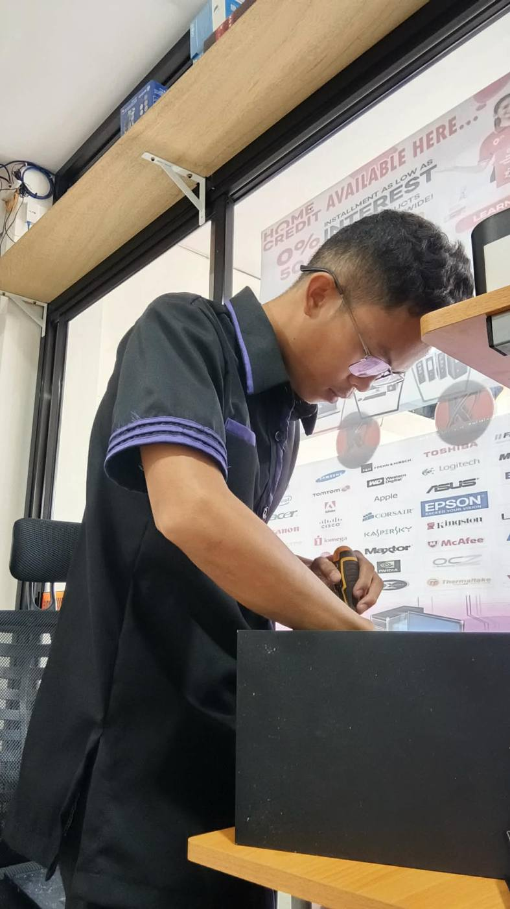
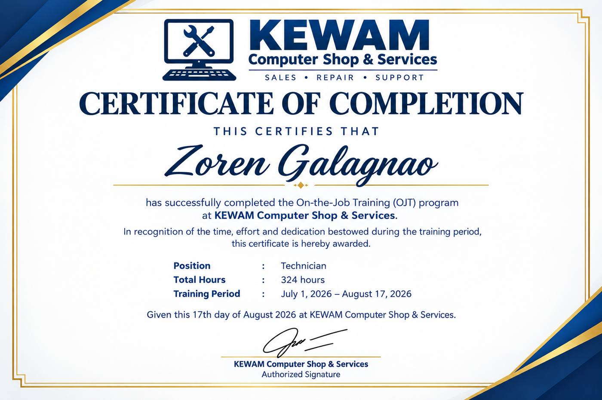
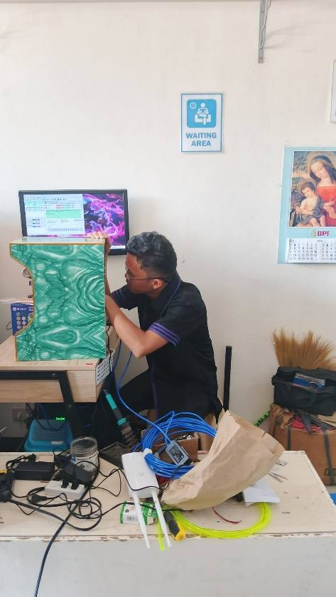
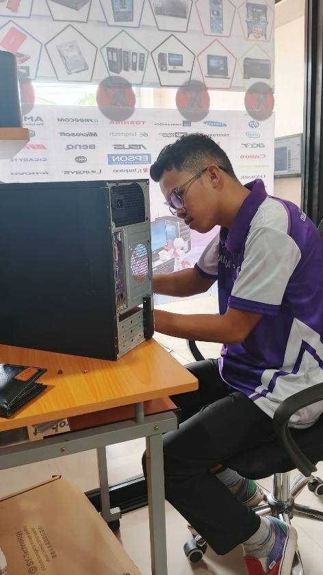
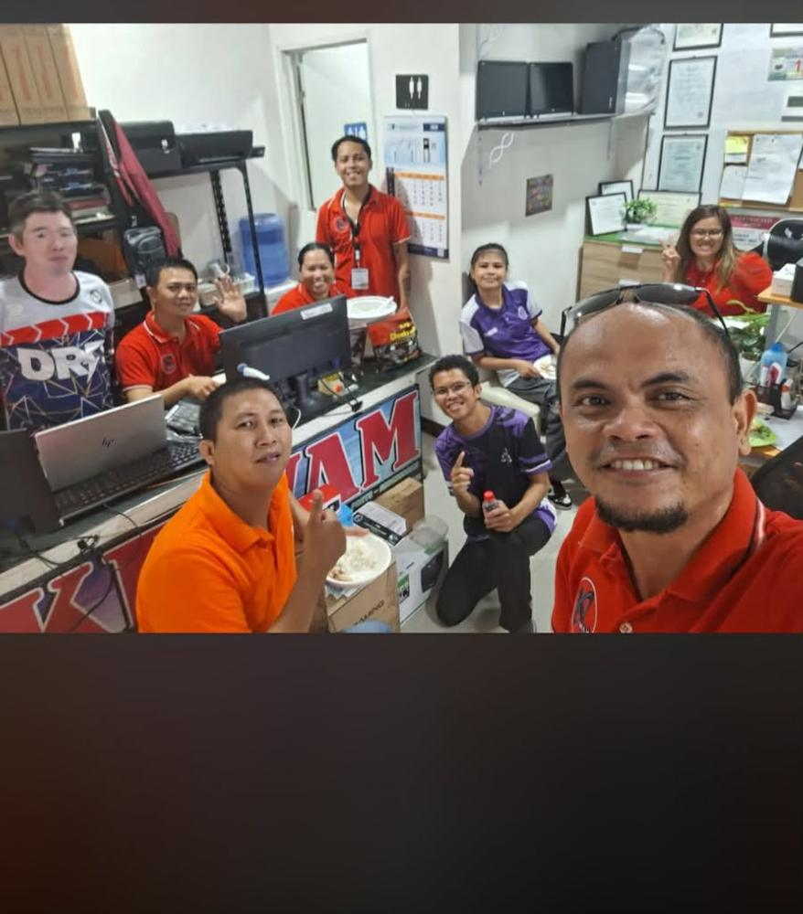
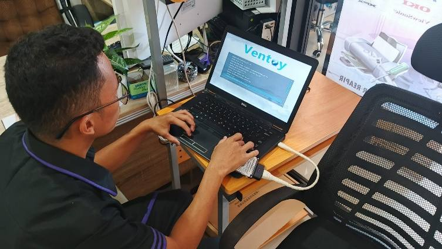

Labalista
A laundry shop management system for tracking orders, customers and the day's work.
Web app · full stack
I'm Zoren Ponce Galagnao, a 4th-year Computer Science student from Tandag City. I build full-stack web apps, and I spent my practicum as a Technician-Trainee at KEWAM Computer Shop & Services repairing PCs, printers and vendo machines.

I'm a detail-oriented Computer Science student who likes building practical software. My academic and personal projects cover web apps, games and management systems, mostly written in JavaScript, TypeScript and PHP.
My OJT pushed me to the other side of the screen. At KEWAM I went from observing senior technicians to building and repairing PisoWifi and water vendo machines on my own by week five. I learned to work carefully and stay patient under pressure, and I learned how much a working machine matters to the people who rely on it.
I'm expected to graduate in June 2027 and I'm working on my thesis now.
A mix of academic projects and systems I built for real businesses.
A laundry shop management system for tracking orders, customers and the day's work.
An ordering app for a water refilling station, so customers can order refills without calling.
A full-stack educational dungeon game with interactive game mechanics and a responsive layout that works across screen sizes.
A free digital library management system for browsing, searching and managing books, with cataloguing, user management and data persistence.
A cross-platform Blackjack card game for mobile with full dealing, scoring and betting logic plus smooth animations.
Custom PC builds, PisoWifi units and water vendo machines built and repaired for real clients during my OJT.
A locally owned shop in Tandag City for sales, repair and support of computers, laptops, printers and vendo machines such as PisoWifi, water vendo and carwash vendo units.

Rated by Rodenne M. Escatron, Manager. Scale: 5 Outstanding, 4 Very Good, 3 Good.
One post per week of my training, written from my weekly accomplishment reports, plus my reflection at the end.




Open to freelance web projects and entry-level developer or IT roles after graduation.